Basic Git Tutorial
Author: Lee-W
Lee Wei

|
|
Contact me
| Education | Experience |
|---|---|
|
|
How to use this slide
整份slide會follow以下兩個原則- : 往右會更換不同的主題
- : 往下則是同一主題更詳細的介紹
Table of content
What is Git?
版本控制系統
(Version Control System)
那版本控制又是什麼...
- 有沒有Code改著改著就回不去的經驗?
- 還是複製了太多備份不知道哪份才是要用的?
打Game要存檔
打Code當然也要存檔
你需要的就是版本控制
占空間，難維護
Git只會記錄每一次有差異的部份
What can version control do for us?
- Historial propose
- 也就是存檔，讓之後Code寫錯了可以回朔
- Collaboration
- 自動整合不同人寫的Code
(如果沒有同一段Code被不同人修改)
- 自動整合不同人寫的Code
Install Git
Install on Linux
Fedora
yum install git-core
Debian, Ubuntu
sudo apt-get install git
Install for Mac
先裝HomeBrew吧
/usr/bin/ruby -e "$(curl -fsSL https://raw.githubusercontent.com/Homebrew/install/master/install)"
安裝git
brew install git
Install for Windows
Git for WindowsSetup
Set E-mail and Name
一開始git會要求要先設定e-mail跟名稱一般來說可以設定成GitHub或bitbucket的帳號
不過也可以設定無效的使用者名稱
git config --global user.name "Your Name"
git config --global user.email "Your Email"
Set Alias
以剪短的指令取代長長的指令懶人必備
git config --global alias."command alias" "original command"
git config --global alias.st status
git config --global alias.cmt commit
git config -–global alias.br branch
git config --global alias.ch checkout
List Settings
透過這個指令就能看到我們對git做了哪些設定Global Setting
git config --global -l
git config -l
Edit Settings
更改global的git設定
git config --global -e
Quick Start
Create a local repo
- 什麼是repo?
- repository，git都是這麼稱呼它的版本庫
- 可以想成就是要加入版本控制的專案
- 初始一個git專案(讓這個資料夾被git記錄)
git init "some path"
(i.e.
git init .)
Create a local repo
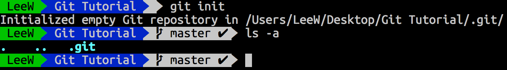- .git
- 這個隱藏資料夾紀錄了git所有的操作
- 裡面都是一般的file，沒有daemon或背景作業
- 建議沒事就不要去動它了
- 絕對不要對他rm -rf .git，不然git的紀錄就會全部不見
- master
- master是目前所在分支的名稱，分支的概念會在以後的章節提到
- 至於像這樣在terminal顯示分支名稱，則是oh-my-zsh-powerline-theme的功能
Stage
看到現在專案中各個檔案的狀態
git status
git st
接下來會說明各個stage代表的意義
Stage
總共分成4個stageuntracked
(新的檔案，還沒加入git中)unmodified
(完成add，但還沒commit)modified
(add完後又做了修改)staged
(commit完成，到這個階段就已經完成紀錄)
接下來會介紹什麼是add和commit
Stage 3 - staged
所有的東西目前都已經加入git (因為還沒有東西) 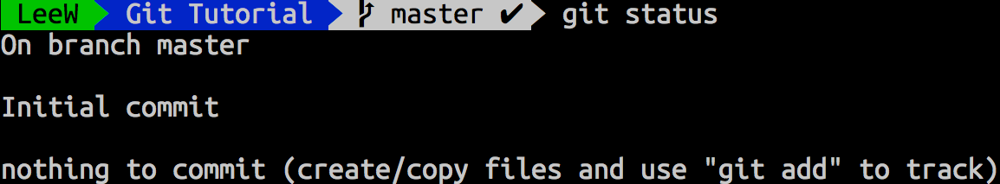Stage 0 - untracked
- 建立一個檔案叫hi.txt
- 現在有一個檔案進入untracked
Stage 1 - unmodified
將新的檔案加入git
git add "file name"
Stage 1 - untracked
如果一次要加入很多檔案怎麼辦？ 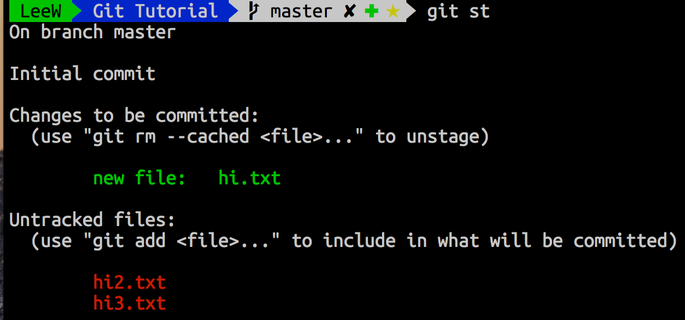Stage 1 - unmodified
git add .
避免add到錯誤的檔案
Stage 3 - staged
讓剛剛的檔案進入staged階段吧，之後這個檔案就會一直被記錄在git
git commit
git config --global core.editor "vim"
Log
既然檔案已經進入紀錄讓我們來查看之前的紀錄
git log
 commit後面的文字是SHA1碼，是每一個commit獨有的一組編號
commit後面的文字是SHA1碼，是每一個commit獨有的一組編號
Stage 2 - modified
如果修改了add或commit的檔案，就會變成這樣 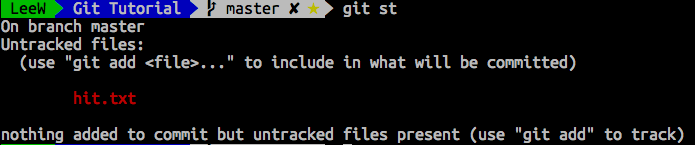這時候只要再用git add，加入紀錄就好了
Stage
- 新增檔案 → 加入track (git add) → 提交(git commit) → 繼續加入其他檔案
- 修改檔案 → 加入stage (git add) → 提交(git commit) → 繼續修改其他檔案
Commit
上一個章節提到寫commit那麼commit到底要寫些什麼呢？
敘述這次做的修改
How to write a good git commit
- Priciple
- 為每個不同的修改做一次commit
- 不要一個commit中記錄太多的修改
- 讓你的commit說一個故事
- More Specific
- 第一行應該在80字以下
- 使用現在式
- 不要去重複任何可以在git diff中被找到的東西
- 更多的細節，應該空下第二行，從第三行開始寫
- 在第三行以後，提到為什麼做了這次的修改
How to write a good git commit
前面的建議是github的staff來成大分享的時候給的下面這幾篇文章也相當值得參考
Commit
如果上一次commit寫錯了，怎麼辦?
git commit --amend
diff
在進入回朔之前我們必須要知道如何在不同的紀錄間做比較
diff
看"target"和上一次commit的不同
git diff "target"
| "SHA1" | 與SHA1碼對應的commit |
| master~1 | master的前兩次commit |
| master^ | 等效master~1 |
| master^^ | 等效master~2 |
diff
看從a到b的改變
git diff a b
看modified的檔案和上一次commit的不同
git diff
看unmodified的檔案和上一次commit的不同 (建議在每一次add後commit前都要用，確認這次的commit是預期的)
git diff --staged
Restore
讓檔案回到最後commit的狀態
git checkout "file name"
讓檔案回到modified (也就是取消add)
git reset "file name"
Restore
經過了多次commit，如果想回到很久以前的版本該怎麼辦？
git reset "可被辨識的commit SHA1碼"
一般只要前四碼就能讓git辨別是不同的commit
但如果是比較大型的專案，可能會需要比較多碼
Restore
回到第一個commit吧| 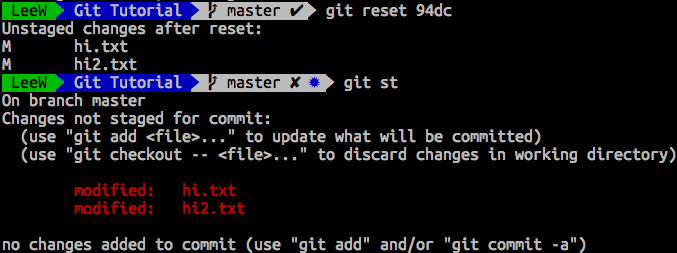 | 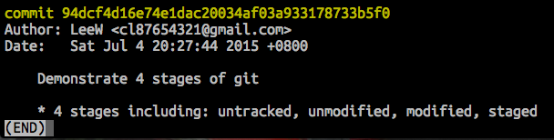 |
reset後"不會"回到到第一次commit的狀態
所有檔案的內容還是跟reset前一樣
只是commit的紀錄回到了第一個commit (只是把存檔點往前移)
這時候要git checkout hi2.txt (執行回到存檔點的動作)
hi2.txt才會回到第一次commit時的內容
Restore
上一頁所提的是soft reset，只會把commit往前回朔如果要連內容一起直接回朔，就會用到hard reset
git reset --HARD "可被辨識的commit SHA1"
Restore
- 如果後悔reset怎麼辦？
- 沒關係，東西其實都還在，再reset回去就好了
- 查看所有的參照日誌
git reflog
同樣git reset加上reflog前面的SHA碼即可 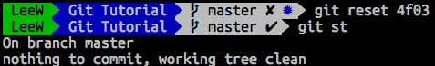
Restore
- 這些長長的SHA1碼，看了就覺得煩啊
- git可以使用"~n"來表示前n次的commit
- HEAD: 最近一次的commit
- HEAD~1: 前兩次的commit
- HEAD~n: 前n+1次的commit
git reset HEAD~n
Restore
只想讓某個檔案回到之前的狀態？
git reset HEAD~n "file name"
reset vs checkout
-
soft reset不會改變現在檔案的內容
而是改變HEAD指向的位址 - checkout才能把現在的檔案回復到之前的狀態
???...
沒關係，看看下一頁的例子吧
reset vs checkout
|
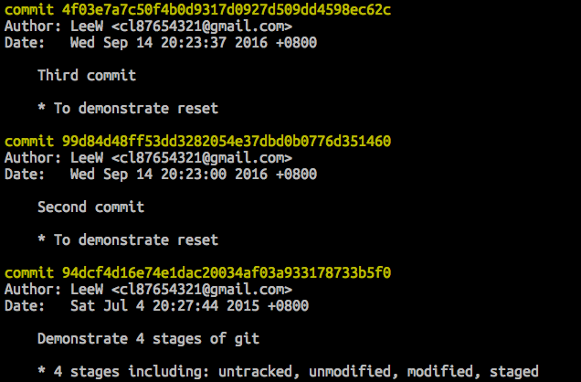
這是git log現在的內容
待會會看第一個commit 94dc 和第三個commit 4f03 |
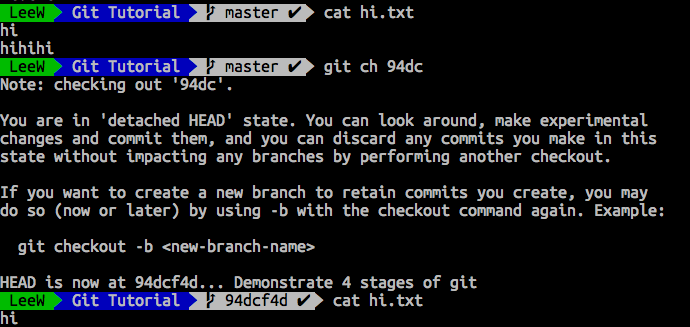
上面cat的結果是commit 4f03 中 hi.txt的內容
下面則commit 94db 中 hi.txt的內容 |
reset vs checkout
先在hi.txt做一些修改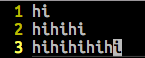
|
reset 到兩次以前的commit
|
checkout
|
Ignore File
- 有些檔案不想被加入git追蹤該怎麼辦？
- 那就忽略它吧！
-
通常會ignore有機密資料的檔案或暫存檔
echo "filename" >> .gitignore -
要忽略特定副檔名的檔案，可以用萬用字元
echo "*.swp" >> .gitignore
- .gitignore也必須被加入git追蹤
- .gitignore不用也不能加./在檔案名稱前面
- 這方法只適用在還沒加入追蹤的檔案
Ignore File
那如果想忽略的檔案已經被加入git追蹤怎麼辦？先將他從版本庫移除
git rm --cache "file name"
接著再做一次上一頁的步驟，就可以ignore了
Ignore File Globally
有些檔案每個專案會忽略(e.g., vim的暫存檔.swp)
如果每一次都要重新輸入就太麻煩了
這時候可以設定一個global的.gitignore (e.g. ~/.gitignore_global)
然後把這個設定寫進git的config
git config --global core.excludesfile "path to global gitignore"
gitignore.io
gitignore.io提供了不同語言.gitignore範本
透過git-extras的git ignore-io可以直接從command line取得範本
另外git-extras的git ignore，也能讓ignore file更輕鬆
Rename(move) and Delete Files
-
刪除已經被加入git追蹤的檔案
git rm "file name" -
刪除檔案在git中的追蹤，但不刪除檔案本身
git rm --cache "file name" -
重新命名或移動位置
git mv "old name" "new name"
Branch
- Branch是git很重要的功能
- 想像成複製很多份同樣的code，各自做不同的修改
- 通常可以用在測試或攥寫新功能
- 可以想像是解支線任務
- 切出支線解不同的任務，每一個支線都能有自己的存檔
- 最後再整併成主線的一部份(也可以不整併)
Branch
創造一個新的分支 (名稱自訂)
git branch "branch name"
切換到另一個分支
git checkout "branch name"
一個指令做到上面兩個步驟
git checkout -b "branch_name"
What actually is branch?
branch並不是真正的copy，比較像是一個書籤
它只是一個指到某一個commit
實際上git還是以這些sha碼來辨別該到哪一個紀錄
 HEAD指的是目前commit所指向的位置
HEAD指的是目前commit所指向的位置後面的master和my-branch就是我們的分支
而我們的這個分支目前都是指向4f03e7a...這個commit上
Branch
我們在my-branch跟master上都做了修改，並分別commit後
就能比較明確看出分支的效果

這時候就可以看到master跟branch指向不同的commit
也不再是同一條線上
Branch
實際上在git中，並沒有所謂的主線master只是預設的branch名稱
一個專案即使沒有master也是沒問題的
定義一條branch為主線只是為了方便開發
Merge
既然在不同的branch上有了不同的修改我們就可以來談，該怎麼整併在一起
Merge
-
將另一個branch合併到現在的branch
通常會在branch修改完並commit後，切換到master才mergegit merge "branch name" -
之後就能把合併完的branch刪掉
git branch -d "branch name" -
如果想強制刪掉還沒merge的branch
git branch -D "branch name"
Merge
我們來看一下master跟my-branch的內容分別是什麼

|
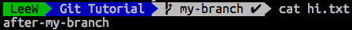 |
完全不同的內容，git會怎麼處理呢？
Merge
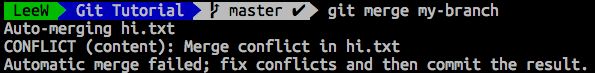 這時候merge，git就會告訴你內容有衝突
來看一下現在status長怎樣
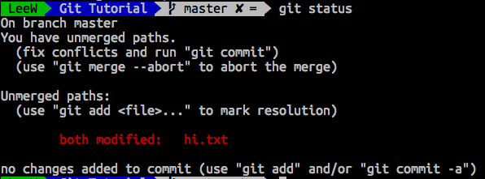
git 已經幫我們判斷其他檔案並沒有衝突
只剩下hi.txt有無法被演算法整併的內容
Merge
這時候打開hi.txt，git會標示哪裡是哪個branch的內容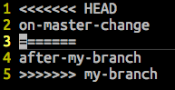
<<<HEAD到===的內容就是HEAD(目前指向master)的內容
下面則是my-branch的內容
Merge
留下想要的內容，add並commit後就可以看到兩條分支已經整併在一起
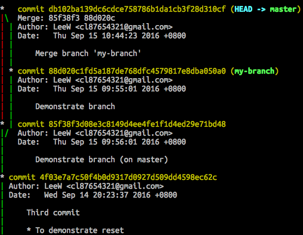
Rename branch
重新命名分支
git branch -m "oldname" "newname"
如果是要重新命名現在所在的分支，則可以省略原本的名稱
git branch -m "newname"
tag
一般來說，tag可以拿來做標記發行的版本或者也可以想成是標記特別重要的commit
tag
-
在現在的commit上，建立一個tag
git tag -a "tag name" -
列出所有的tag
git tag - 觀看某一個tag的詳細資訊
git show "tag name"
tag
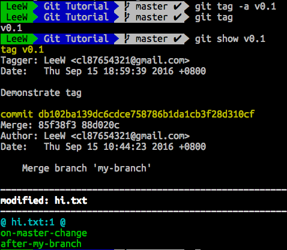Remote
既然要能跟別人協作當然要能把repo丟上遠端
接下來會以GitHub作為例子
What is github
Remote
要上傳前，當然要有個空間可以上傳先在GitHub建立一個repository 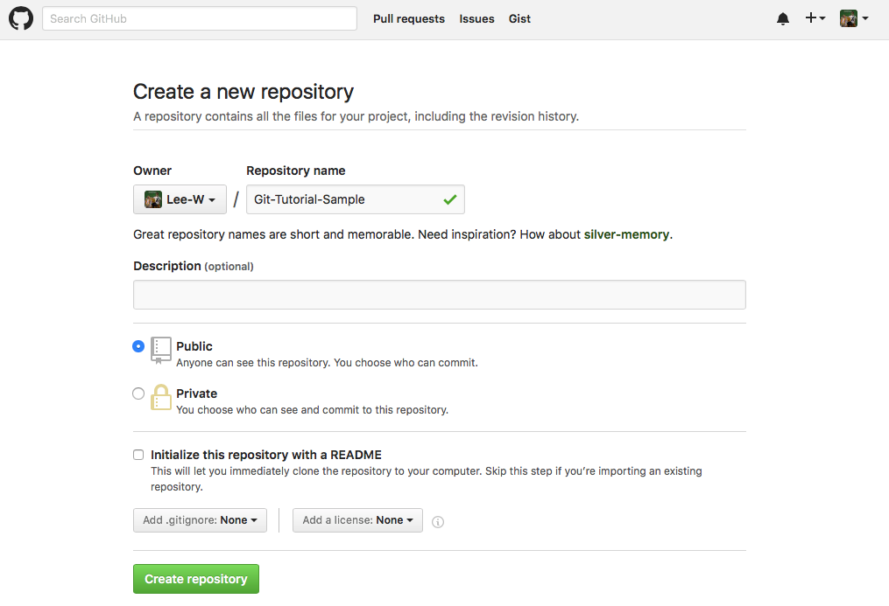
Remote
接著就會看到這個頁面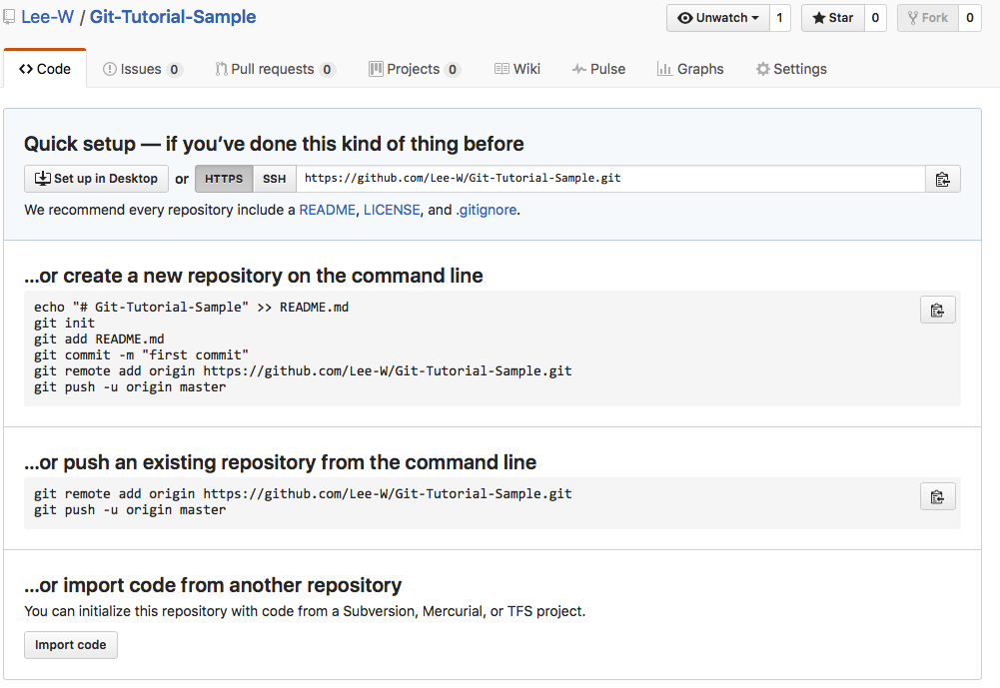
因為我們已經有本地的git專案了，我們只要看
git remote add origin https://github.com/Lee-W/Git-Tutorial-Sample.git
git push -u origin master
Remote
增加remote(遠端的存放點)
git remote add "remote-name" "remote url"
- 上一頁的origin就是remote name
- remote url則是https://github.com/Lee-W/Git-Tutorial-Sample.git
- origin只是預設的remote name，並沒有強制一定要存在
- 一個專案也有可能有超過一個remote
Remote
檢視現在有哪些remote
git remote -v
Push your repo
所謂push就是上傳你的專案
git push -u "remote name" "branch name"
要push到這次push的remote和branch
接著用
git branch --all可以看到遠端的master分支已經存在了
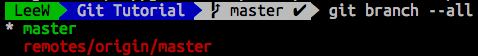
Push your repo
將所有的branch push上去
git push --all
Credential
每次push的時候會要輸入帳號密碼實在太麻煩了
git config --global credential.helper cache
如果cache改成store就可以永遠記住
不過需要注意的是，store會將帳號密碼以明碼記錄在~/.git-credentials
因此不建議使用store
What should be in a repo?
- 程式碼
- README.md
- 說明專案該如何使用
- 以markdown語法攥寫
- GitHub會自動去找readme，README等字眼，並建立出對應的說明文件
- GitHub使用的是GitHub Favored Markdown
- LICENSE.txt
What shouldn't be in a repo?
- 任何機密資料(e.g. 密碼)
- 暫存檔(e.g. .swp, __pycacehe__)
- Binary檔
- 很大的檔案（如果有必要，可以試試git-annex）
Clone
那上傳上去的專案，其他人如何下載下來呢
git clone "repo url"
Pull
如果已經有這個專案，要怎麼更新呢？
git pull "remote name" "branch name"
What did pull do?
Pull實際上做了fetch和merge命令的動作git fetch做的只是從遠端抓下來
讓我們可以checkout到 "remote name"/"branch name"這個分支
並不會像pull一樣處理merge的動作
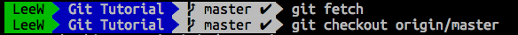 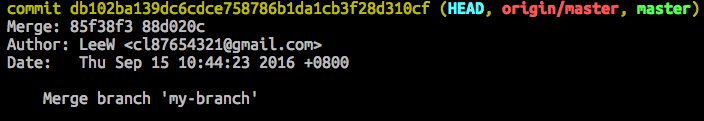
因為我們並沒有做修改，master跟origin/master都是指像同樣的地方
Other Remote Operation
重新命名Remote
git remote rename "old name" "new name"
git remote rm "remote name"
Remote branch
- Check遠端分支
git fetch git branch -a git checkout "branch name" -
Clone單一遠端分支
如果不指定directory，就會clone到當前目錄git clone "url" --branch "branch name" --single-branch "directory"
Remote branch
-
刪除遠端分支
git branch -d :"branch name" -
清理過時的遠端分支
(在遠端已經被移除，本地端紀錄遠端分支存在)git remote prune "remote name"
Remote Tags
- Push單一Tag
git push "remote name" "tag name" - Push所有Tag
git push "remote name" --tags
History
接下來來談使用哪些工具協助我們查看以往的記錄log
現在的log變得更複雜了git log 有很多功能可以幫助我們容易理解log
log
git log --decorate

標記各個指標目前所指向的位置
log
git log --all

列出所有分支的log
85f3的是master上的commit
88d0則是原本my-branch分支上的
log
git log --graph

在log旁邊加上輔助線，更清楚看分支的狀況
log
同時使用--graph, --all, --decorate就能看到我在branch章節用來解說用的結果
也可以直接將這些參數alias到簡單的指令讓下次使用更輕鬆
git config --global alias.lg "log --grpah --decorate --all"
log
除此之外我們也可以針對單一檔案做追蹤
git log --follow "file name"
show
有時候會需要看某一個特定commit或tag的資訊這時候就能用上show
git show "commit or tag"
show
另外一個很功能是是查看某個commit中的某個檔案
git show "commit":"file name"
stash
有時候修改到一半，突然想要切換到其他分支如果新的修改跟其他分支有衝突，git就會阻止我們
這時候除了commit外
還能用stash暫存目前的修改
stash
假設我們已經在my-branch上加上"new content on my-branch"並且commit了 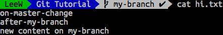
這時候線圖看起來會是這樣的
my-branch比master多了一個commit
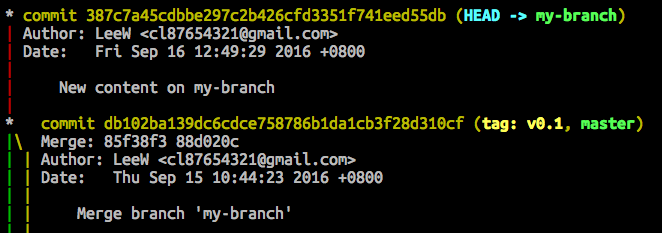
stash
接著我們再對master上的hi.txt做一些修改 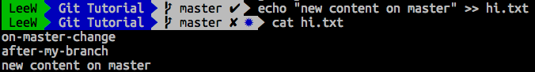如果這時候要checkout到my-branch上
git就會警告我們必須要先commit或stash 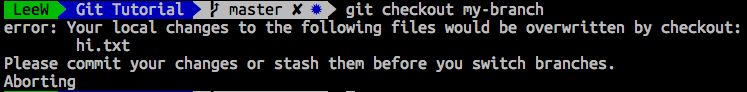
但我們可能還沒有做到一個適合commit的階段
這時候就能用stash暫存起來
stash
將檔案加入stash暫存
git stash
這時候hi.txt就會回到原本的狀態 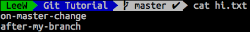
stash
查看目前所有的stash
git stash list
stash
取回暫存的狀態
git stash apply "stash name"
這時候就能看到
hi.txt又變成我們更改過後的狀態

stash
不過我們apply後，並不會把剛剛的暫存記錄刪除如果不用留著就可以把它刪掉了
git stash drop "stash name"
rebase
修改commit的history需要注意的是rebase是有點危險的指令
有可能造成不太容易回復的後果
請謹慎使用
rebase
如果想看影片可以參考ihower的Git rebase 和 merge 合併操作示範錄影
我也是從這學rebase的
rebase
這裡只會介紹基本的interactive rebase
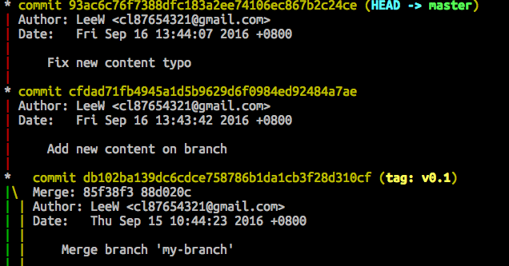
假設我們多了兩個commit
其中有一個commit只是修復打錯字
我們希望能把它整併進上一個commit
rebase
git rebase -i "SHA1"
接著就會進入rebase的互動介面
下面有說明可以進行哪些動作
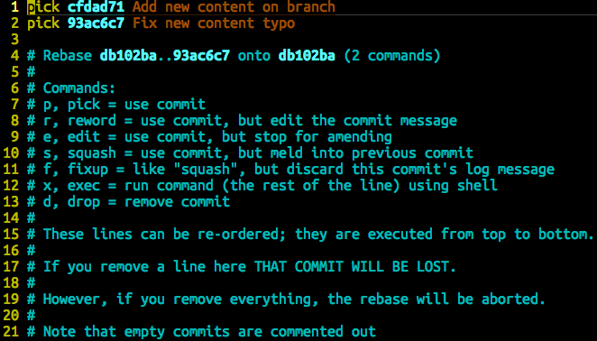
rebase
假設我們只有要讓typo的commit整併到上一個commit 只要將pick改成f，並存檔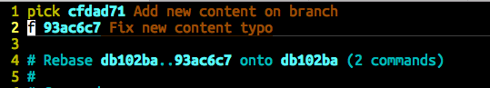
再去看log就會發現typo這個commit不見了 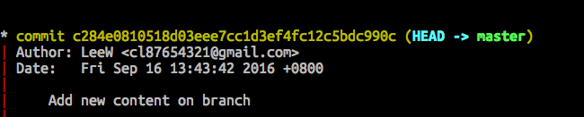
rebase
rebase甚至可以交換commit的順序只要在剛剛的interactive mode調換commit的順序
就會更改在history中的順序
不過要注意的是，如果這些commit有修改到同樣的檔案，可能會造成問題
rebase
如果遇到conflict，可以用
git rebase --abort
Pull with rebase
git pull --rebase
更詳細的介紹，請參考ihower的
使用 git rebase 避免無謂的 merge
submodule
有時候一個專案中，會用到其他專案的程式碼但是其他專案，又不應該被加入這個專案的版本庫
而且如果那個專案更新，我們就得要手動更新
這時候就能用submodule
在專案下，再加入另一個專案
submodule
加入submodule
git submodule add "repo url" "some path"
假設要把現在這份投影片的repo
加入原本的專案

Submodule
現在看目前的status會發現增加了新的檔案 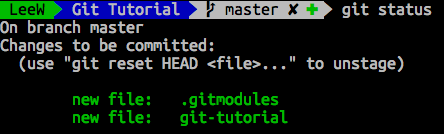它們也必須被commit，git才會記錄加入submodule的操作
Submodule
再來看看原本的專案和submodule的remote| 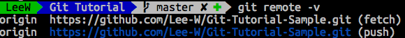 | 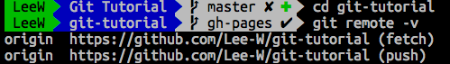 |
因為它們確實是兩個不同的專案
submodule
pull所有submodule
git submodule foreach --recursive git pull "remote name" "branch name"
連同submodule一起clone下來
git clone --recursive "url"
Useful Pluging
-
tig
ncurses based的git介面 -
git-extras
擴充git基本的功能，我最常用ignore和ignore-io兩項功能 -
diff-so-fancy
美化git diff的訊息 -
hub
GitHub提供的套件，增加了許多能跟GitHub整合的功能